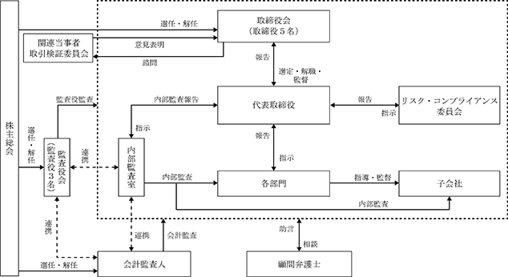

（注）提出日現在発行数には、2024年４月１日からこの有価証券報告書提出日までの新株予約権の行使により発行された株式数は、含まれておりません。
第４回ストック・オプション
※ 当事業年度の末日（2024年１月31日）における内容を記載しております。なお、提出日の前月末（2024年３月31日）現在において、これらの事項に変更はありません。
(注) １．2017年３月14日開催の取締役会における決議の日(以下、「決議日」という。)以降に、当社が株式分割又は株式併合を行う場合、次の算式により目的となる株式の数を調整するものとします。ただし、かかる調整は本新株予約権のうち、当該時点で行使されていない新株予約権の目的たる株式の数について行われ、調整により生じた１株未満の端数については、これを切り捨てるものとします。
なお、当社が合併、会社分割、株式交換又は株式移転(以下総称して「合併等」という。)を行う場合、株式の無償割当を行う場合、その他株式数の調整を必要とする場合には、合併等、株式の無償割当の条件等を勘案のうえ、合理的範囲内で株式数を調整することができます。
２．決議日以降に当社が株式分割、株式併合を行う場合は、次の算式により行使価額を調整するものとし、調整により生ずる１円未満の端数は切り上げます。
また、新株予約権の割当日後に時価を下回る価額で新株式の発行又は自己株式の処分を行う場合は、次の算式により払込金額を調整し、調整により生ずる１円未満の端数は切り上げます。
上記算式において、「既発行株式数」とは、当社の発行済株式総数から当社が保有する普通株式に係る自己株式を控除した数とし、また、自己株式の処分を行う場合には「新規発行株式数」を「処分する自己株式数」に読み替えるものとします。さらに、当社が合併等を行う場合、株式の無償割当を行う場合、その他上記の行使価額の調整を必要とする場合には、合併等の条件、株式の無償割当の条件等を勘案のうえ、合理的な範囲内で行使価額を調整することができます。
３．本新株予約権の行使により株式を発行する場合の増加する資本金の額は、会社計算規則第17条に従い算出される資本金等増加限度額の0.5を乗じた額とし、計算の結果１円未満の端数を生じる場合は、その端数を、切り上げるものとします。増加する資本準備金の額は、資本金等増加限度額より増加する資本金の額を減じた額とします。
４．組織再編成行為に伴う新株予約権の交付については、次のとおりであります。
当社が組織再編に際して定める契約書又は計画書等に以下に定める株式会社の新株予約権を交付する旨を定めた場合には、当該組織再編の比率に応じて、次の各号に定める株式会社の新株予約権を交付するものとします。
①合併(当社が消滅する場合に限る)
合併後存続する株式会社又は合併により設立する株式会社
②吸収分割
吸収分割をする株式会社がその事業に関して有する権利義務の全部又は一部を承継する株式会社
③新設分割
新設分割により設立する株式会社
④株式交換
株式交換をする株式会社の発行済株式の全部を取得する株式会社
⑤株式移転
株式移転により設立する株式会社
第５回ストック・オプション
※ 当事業年度の末日（2024年１月31日）における内容を記載しております。なお、提出日の前月末（2024年３月31日）現在において、これらの事項に変更はありません。
(注) １．2018年12月13日開催の取締役会における決議の日(以下、「決議日」という。)以降に、当社が株式分割又は株式併合を行う場合、次の算式により目的となる株式の数を調整するものとします。ただし、かかる調整は本新株予約権のうち、当該時点で行使されていない新株予約権の目的たる株式の数について行われ、調整により生じた１株未満の端数については、これを切り捨てるものとします。
なお、当社が合併、会社分割、株式交換又は株式移転(以下総称して「合併等」という。)を行う場合、株式の無償割当を行う場合、その他株式数の調整を必要とする場合には、合併等、株式の無償割当の条件等を勘案のうえ、合理的範囲内で株式数を調整することができます。
２．決議日以降に当社が株式分割、株式併合を行う場合は、次の算式により行使価額を調整するものとし、調整により生ずる１円未満の端数は切り上げます。
また、新株予約権の割当日後に時価を下回る価額で新株式の発行又は自己株式の処分を行う場合は、次の算式により払込金額を調整し、調整により生ずる１円未満の端数は切り上げます。
上記算式において、「既発行株式数」とは、当社の発行済株式総数から当社が保有する普通株式に係る自己株式を控除した数とし、また、自己株式の処分を行う場合には「新規発行株式数」を「処分する自己株式数」に読み替えるものとします。さらに、当社が合併等を行う場合、株式の無償割当を行う場合、その他上記の行使価額の調整を必要とする場合には、合併等の条件、株式の無償割当の条件等を勘案のうえ、合理的な範囲内で行使価額を調整することができます。
３．本新株予約権の行使により株式を発行する場合の増加する資本金の額は、会社計算規則第17条に従い算出される資本金等増加限度額の0.5を乗じた額とし、計算の結果１円未満の端数を生じる場合は、その端数を、切り上げるものとします。増加する資本準備金の額は、資本金等増加限度額より増加する資本金の額を減じた額とします。
４．組織再編行為に伴う新株予約権の交付については、次のとおりであります。
当社が組織再編に際して定める契約書又は計画書等に以下に定める株式会社の新株予約権を交付する旨を定めた場合には、当該組織再編の比率に応じて、次の各号に定める株式会社の新株予約権を交付するものとします。
①合併(当社が消滅する場合に限る)
合併後存続する株式会社又は合併により設立する株式会社
②吸収分割
吸収分割をする株式会社がその事業に関して有する権利義務の全部又は一部を承継する株式会社
③新設分割
新設分割により設立する株式会社
④株式交換
株式交換をする株式会社の発行済株式の全部を取得する株式会社
⑤株式移転
株式移転により設立する株式会社
該当事項はありません。
③ 【その他の新株予約権等の状況】
該当事項はありません。
該当事項はありません。
(注) １．新株予約権の権利行使による増加であります。
２．有償一般募集（ブックビルディング方式による募集）
発行価格 1,250円
引受価額 1,150円
資本組入額 575円
３．有償第三者割当（オーバーアロットメントによる売出しに関連した第三者割当増資）
発行価格 1,150円
資本組入額 575円
割当先 三菱ＵＦＪモルガン・スタンレー証券㈱
４．2021年６月25日開催の定時株主総会の決議に基づき、資本政策の柔軟性及び機動性を確保すること等を目的に減資を行いました。この結果、資本金が771,583千円減少し（減資割合89.6％）、その減少額全額をその他資本剰余金に振り替えております。
2024年１月31日現在
（注）自己株式70,629株は、「個人その他」に706単元、「単元未満株式の状況」に29株含まれております。
2024年１月31日現在
2024年１月31日現在
2024年１月31日現在
【株式の種類等】 普通株式
該当事項はありません。
該当事項はありません。
該当事項はありません。
当社は、株主に対する利益還元を重要な経営課題として認識しており、将来の事業展開と経営体質の強化のために、必要な内部留保を確保しつつ、収益に応じて株主の皆様への配当を実施することを基本方針としております。
しかしながら、地政学的リスク等に伴う原材料価格やエネルギー価格の高騰等、今後の見通しや財務状況等を総合的に勘案し、当期の期末配当金につきましては、無配とさせていただきます。
当社の剰余金の配当は、中間配当及び期末配当の年２回を基本的な方針としております。配当の決定機関は、中間配当及び期末配当いずれも取締役会であります。
内部留保資金の使途につきましては、今後の事業への備えと今後の新店舗投資として投入していくこととしております。
なお、当社は中間配当を行うことが出来る旨を定款に定めております。
① コーポレート・ガバナンスに対する基本的な考え方
当社におけるコーポレート・ガバナンスに対する基本的な考え方は、社会の変化に迅速に対応できる経営を行い、効率的かつ、法令、社会倫理規範を遵守し、健全である経営体制を作ることにあります。また、事業活動により価値創造を通じた社会への貢献を行うことで社会的責任を果たし、正確かつ公平なディスクロージャーに努め、ステークホルダーへの誠実な対応と、透明性のある経営を行うことが重要と考えております。
当社は、会社法に基づく機関として、株主総会及び取締役会、監査役会を設置するとともに、社内の統治体制の構築のため、リスク・コンプライアンス委員会及び関連当事者取引検証委員会を設置しております。これら各機関の相互連携により、経営の健全性、効率性及び透明性が確保できるものと認識しているため、現状の企業統治体制を採用しております。
当社の各機関の内容は以下のとおりであります。
(取締役会)
当社の取締役会は、取締役５名(うち社外取締役２名)により構成され、業務の意思決定及び取締役間の相互牽制による業務執行の監督を行う機関と位置付け運営されております。原則として、毎月１回開催される他、必要に応じて臨時取締役会を開催し、経営判断の迅速化を図っております。また、経営に対する牽制機能を果たすべく、監査役が取締役会へ出席しております。
(監査役会)
監査役会は、監査役３名(うち社外監査役２名)で構成されており、原則として毎月１回開催されております。
監査役監査につきましては、全員が株主総会、取締役会への出席や、取締役及び従業員からの報告聴取等法律上の権利行使を行う他、常勤監査役は、リスク・コンプライアンス委員会等の重要な会議への出席や各部署への往査等実効性のあるモニタリングに取り組むことで、ガバナンスの在り方とその運営状況を監視し、取締役の職務の執行を含む日常的活動の監査を行っております。
(リスク・コンプライアンス委員会)
リスク・コンプライアンス委員会は、代表取締役社長を委員長とし、全社的な法令遵守推進に関わる課題・対応策を協議、承認する組織として、原則として年４回以上開催されております。当委員会では、役職員に対する教育研修体制を構築するとともに、食品衛生法・金融商品取引法・会社法等をはじめとする諸法令等に対する全従業員のコンプライアンス意識を高めるための取り組みを行っております。また、コンプライアンスに関する内部統制機能の強化を継続的に行える体制を推進・維持し、様々なリスクを想定して未然に対処できるような組織体制の構築・リスク分析並びに対策に努めております。
(関連当事者取引検証委員会)
関連当事者取引検証委員会は取締役会の諮問機関と位置づけており、社内役員２名、独立社外役員４名にて構成し、委員長は独立社外役員が務めております。全ての関連当事者取引は、本委員会より意見表明を受けた上で、取締役会で審議することとし、関連当事者取引に対する牽制体制を構築しております。
(内部監査室)
当社は、代表取締役社長直轄の内部監査室（室長１名）が、「内部監査規程」に基づき、監査計画に従って計画的に当社及び連結子会社の各部門・店舗に対して内部監査を実施しております。被監査部門に対しては、業務の適正性、効率性について改善事項の指摘・指導を行い、実効性の高い監査を実施しております。
(会計監査人)
当社は、かがやき監査法人と監査契約を締結し、独立した立場からの会計監査を受けております。
当社の機関、経営管理体制及び内部統制の仕組みは以下のとおりであります。

③ 企業統治に関するその他の事項
イ 内部統制システムの整備の状況
当社は、企業価値をより一層高めるため、業績の向上を図り、経営の健全性、効率性、透明性の向上、法令遵守体制の確立を行い、実効性のある内部統制システムを実現していくことを基本的な考えとしており、その基本方針は以下のとおりであります。
(a) 取締役及び使用人の職務の執行が法令及び定款に適合することを確保するための体制
・コンプライアンス体制に関するコンプライアンス基本規程により、取締役及び使用人が法令及び定款を遵守した行動を取るための行動規範を定める。
・取締役会を定期的に開催し、取締役間の意思疎通を図るとともに、相互に職務執行を監視・監督する。また、監査役による職務執行の監査を受け、法令及び定款に反する行為の未然防止に努める。
・取締役は、他の取締役及び使用人の職務の執行について、重大な法令違反その他コンプライアンスに関する重要な事実を発見した場合には、直ちに監査役及び取締役会に報告し、その是正を図る。
・内部監査室による監査を実施し、業務の適正性等を確保する。
・内部通報制度を運用し、法令及び定款に反する事実の早期発見に努める。
(b) 取締役の職務の執行に係る情報の保存及び管理に関する体制
・取締役の職務の執行に係る情報・文書の取扱いは、社内規程及び管理マニュアルに従い適切に保存及び管理を実施し、必要に応じて管理状況の検証、各規程等の見直しを行う。
・取締役及び監査役は上記に係る重要な情報・文書を常時閲覧できる体制とする。
(c) 損失の危険の管理に関する規定その他の体制
・リスク管理規程に基づき企業集団におけるリスクを抽出し、重要性に応じて適切な対策を策定・実施する。また、リスク管理の実施状況を定期的に取締役会及び監査役会に報告する。
・経営上の重大なリスクへの対応方針その他リスク管理の観点から、重要な事項については、取締役会において報告・審議する。
・情報リスクに関する規程を定め、経営的損失を未然に防止する体制を確保する。
・取締役会を月１回開催し、経営に関する重要事項を決定するとともに業務執行状況の相互監督を行う。
・取締役会の議案は取締役会規程の付議基準により、事前に取締役及び監査役に議案に関する資料を配布することで、審議の活性化・実質化を図る。
・経営環境の変化に対応し、意思決定の迅速化や職務執行等経営の効率化を図るために、職務権限規程等を整備する。
(e) 当社並びに親会社及び子会社からなる企業集団における業務の適正を確保するための体制
（子会社の業務の適正を確保するための体制を含む）
・子会社管理規程により経営管理を行う一方、子会社の経営の自主性を尊重するとともに、業務の適正な運用について積極的に指導を行う。
・子会社における経営上の重要な事項は、定期的に当社へ報告するものとする。取締役は総合的に助言・指導を行う。
・取締役は、子会社における重大な法令違反その他コンプライアンスに関する重要な事実を発見した場合には、直ちに監査役及び取締役会に報告し、その是正を図る。
・監査役は、子会社の監査役と意見交換等を実施し、連携を図る。
・内部監査室は、子会社の内部監査を実施し、結果を取締役会及び監査役に報告する。
(f) 財務報告の適正性を確保するための体制
・金融商品取引法の定めによる財務報告の適正性を確保するため、全社レベル及び業務プロセスレベルの統制活動の整備・運用状況を定期的に評価し、継続的に改善を図る。
(g) 監査役がその職務を補助すべき使用人を求めた場合における当該使用人に関する事項
・監査役がその職務を補助すべき使用人を置くことを求めた場合には、当該使用人を配置するものとし、具体的な内容（組織、人数、その他）については、監査役と相談の上、その意見を十分考慮して検討する。
(h) 前号の使用人の取締役からの独立性に関する事項
・監査役の職務を補助すべき使用人の任命については、監査役の同意を必要とする。また使用人は、業務執行に係る役職を兼務せず、監査役の指揮命令下で職務を遂行し、その評価については監査役の意見を聴取するものとする。
(i) 監査役の職務を補助すべき使用人に対する指示の実効性の確保に関する事項
・取締役は、監査役から監査業務の補助を命じられた使用人の業務が円滑に行われるよう、監査環境の整備に努める。
(j) 監査役への報告に関する体制及び当該報告した者が不利な取扱いを受けないことを確保するための体制
・取締役及び使用人は、当社の業務または業績に影響を与える重要な事項について、監査役に都度報告するものとする。監査役は必要に応じて、取締役及び使用人に対して報告を求めることができる。
・内部通報規程の適切な運用を維持することにより、法令違反その他のコンプライアンス上の問題について、監査役への適切な報告体制を確保する。また、当該情報提供を理由とした不利益な処遇は、一切行わない。
(k) 監査役の職務の執行について生ずる費用等の処理に係る方針に関する事項
・取締役は、監査役がその職務の執行について生じた費用の請求をした場合には、監査の実効性を担保するべく適切に対応する。
・監査役は、取締役会に出席するほか、必要と認める重要な会議に出席する。
・監査役は、代表取締役社長及び取締役、会計監査人、内部監査室とそれぞれ定期的な会合を開催することにより、監査役監査の環境整備の状況や重要課題等について意見交換を行い、相互の意思疎通を図る。
当社は、取締役がリスク管理体制を構築する責任と権限を有し、これに従いリスク管理に係る「リスク管理規程」を制定し、多様なリスクを可能な限り未然に防止し、危機発生時には企業価値の毀損を極小化するための体制を整備しております。
当社の反社会的勢力排除に向けた基本的な考え方は、反社会的勢力と一切の関係を断絶することを基本方針とし、コンプライアンス精神を養い浸透させるために、会社、役員及び従業員一同が、顧客、取引先、株主等に対し、行動の基本とすることを確認し遵守のうえ、コンプライアンス体制の確立と企業倫理の実践に努めております。
当社は、会社法第426条第１項の規定により、任務を怠ったことによる取締役(取締役であった者を含む。)及び監査役(監査役であった者を含む。)の損害賠償責任を法令の限度において、取締役会の決議によって免除することができる旨を定款に定めております。これは、取締役及び監査役が職務を遂行するにあたり、その能力を十分に発揮して、期待される役割を果たしうる環境を整備することを目的とするものであります。
当社は、定款において、会社法第427条第１項の規定に基づき、社外取締役又は社外監査役との間において、会社法第423条第１項の損害賠償責任を限定する契約を締結することができる旨を定めております。なお、当社と社外取締役及び社外監査役は、同規定に基づき損害賠償責任を限定する契約を締結しております。当該契約に基づく損害賠償責任の限度額は、法令が定める額としております。なお、当該責任限定が認められるのは、当該社外取締役もしくは社外監査役が責任の原因となった職務の遂行について善意でかつ重大な過失がないときに限られます。
当社は、定款において、会社法第427条第１項の規定に基づき、会計監査人との間において、会社法第423条第１項の損害賠償責任を限定する契約を締結することができる旨を定めておりますが、現在、当該契約は締結しておりません。
へ 取締役、監査役の定数
当社の取締役は15名以内、監査役は４名以内とする旨を定款で定めております。
ト 取締役等の選任の決議要件
当社は、取締役及び監査役の選任決議について、議決権を行使することができる株主の議決権の３分の１以上を有する株主が出席し、その議決権の過半数をもって選任する旨を定款に定めております。また、取締役の選任決議は累積投票によらない旨も定款に定めております。
当社は、株主への機動的な利益還元を可能にするため、剰余金の配当等会社法第459条第１項に定める事項については、法令に特段の定めがある場合を除き、取締役会決議によって定めることとする旨を定款で定めております。また、会社法第454条第５項の規定により、取締役会の決議によって毎年７月31日を基準日として、中間配当を行うことができる旨を定款に定めております。
当社は、会社法第165条第２項の規定により、取締役会の決議をもって、自己の株式を取得することができる旨を定款で定めております。これは、経営環境の変化に対応した機動的な資本政策の遂行を可能とするため、市場取引等により自己の株式を取得することを目的とするものであります。
当社は、会社法第309条第２項に定める株主総会の特別決議要件について、議決権を行使することができる株主の議決権の３分の１以上を有する株主が出席し、その議決権の３分の２以上をもって行う旨定款に定めております。これは、株主総会における特別決議の定足数を緩和することにより、株主総会の円滑な運営を行うことを目的とするものであります。
ル 取締役会の活動状況
当事業年度において当社は取締役会を月１回以上開催しており、各取締役及び各監査役の出席状況は次のとおりです。
（注）１．取締役の森下篤史氏、社外取締役の平間律子氏、常勤監査役の酒井圭吾氏、社外監査役の北見一幸氏は、2023年６月29開催の第50期定時株主総会において就任したため、開催回数及び出席回数は就任後のものであります。
２．社外取締役の林幸氏、社外監査役の後藤徳彌氏は、2023年６月29日開催の第50期定時株主総会終結の時をもって退任したため、開催回数及び出席回数は退任前のものであります。
３．常勤監査役の松井悟氏は、2023年４月25日に辞任、常勤監査役の森下明人氏は、2023年６月29日に辞任により退任したため、開催回数及び出席回数は退任前のものであります。
取締役会における主な検討事項は、株主総会の招集に関する件、重要な契約の締結に関する件、自己株式の買受に関する件、年度予算の承認の件等です。
① 役員一覧
男性
(注) １．取締役のうち、清水孝洋氏及び平間律子氏は、社外取締役であります。
２．監査役のうち、勝部康男氏及び北見一幸氏は、社外監査役であります。
３．取締役の任期は、2024年１月期に係る定時株主総会終結の時から、１年以内に終了する事業年度のうち最終のものに関する定時株主総会終結の時までであります。
４．2022年６月開催の定時株主総会終結の時から、４年以内に終了する事業年度のうち最終のものに関する定時株主総会終結の時までであります。
５．2023年６月開催の定時株主総会終結の時から、４年以内に終了する事業年度のうち最終のものに関する定時株主総会終結の時までであります。
② 社外役員の状況
当社は社外取締役を２名、社外監査役を２名選任しております。社外取締役である清水孝洋氏、並びに社外監査役である勝部康男氏及び北見一幸氏は、いずれも当社の株式を保有しておらず、また、その他の人的関係、資本的関係又は取引関係その他利害関係は存在しておりません。
当社においては、社外取締役及び社外監査役を選任するための会社からの独立性に関する基準又は方針は定めておりませんが、選任にあたっては東京証券取引所の独立性に関する判断基準等を参考としております。
③ 社外取締役または社外監査役による監督または監査と内部監査、監査役監査及び会計監査との相互連携並びに内部統制部門との関係
社外取締役は、取締役会における意見表明、また監査役会等での個別の情報交換・意見交換等を行うことで、独立した客観的な立場から経営の監督機能を図っております。
社外監査役は、取締役会への出席、常勤監査役及び会計監査人との定期的な情報交換・意見交換等を行うことで、相互連携を図りながら経営の監査機能を高めております。
(3) 【監査の状況】
当社の監査役会は、常勤の監査役１名及び非常勤の社外監査役２名で構成されております。各監査役は経営・会計・法務に関する十分な知見を有しており、独立性を確保しながら取締役会等に出席し、取締役の職務執行について監査を行っております。
当事業年度において当社は監査役会を月１回以上開催しており、各監査役の出席状況は次のとおりです。
(注)１．開催回数は、就任後及び退任前に開催された回数を表示しております。
２．後藤德彌氏は、2023年６月29日付で当社監査役を退任しております。
３．森下明人氏は、2023年６月29日付で当社監査役を辞任しております。
４．松井悟氏は、2023年４月25日付で当社監査役を辞任しております。
監査役会における主な検討事項は、監査の方針及び監査計画、内部統制システムの整備・運用状況、各監査役の監査実施状況、会計監査人監査の相当性判断、会計監査人の評価等です。
また、常勤監査役の活動としては、年間の監査計画に基づき、各部門・店舗・子会社への往査を実施するとともに取締役会等の重要な会議へ出席し、代表取締役や各取締役からの報告聴取及び意見交換、重要な決裁書類等の閲覧、会計監査人・内部監査室・子会社監査役との意見交換等を行っております。
また、非常勤（社外）監査役は、取締役会へ出席し意見陳述を行なうとともに、代表取締役等との意見交換を行っております。
② 内部監査の状況
当社は、代表取締役社長直轄の内部監査室を設置し、年間計画に基づいて監査を実施しており、各部門及び店舗の法令遵守の状況や業務の適正性・効率性の検証を行っております。
また、内部監査室(１名)は、監査役(３名)及び会計監査人と定期的に実施状況等の情報交換を行うことにより連携を強化しております。
内部監査の実効性を確保するため、必要のある際には取締役会並びに監査役及び監査役会に対して、直接報告する機会を設けることは可能となっております。
かがやき監査法人
１年間
林 幹根
肥田 晴司
(d) 監査業務に係る補助者の構成
公認会計士 ５名
その他 １名
(e) 監査法人の選定方針と理由
監査役会は、会計監査人が会社法第340条第１項各号に定める項目に該当すると認められる場合は、監査役全員の同意に基づき会計監査人を解任いたします。さらに、会計監査人の職務の執行に支障がある場合等、その必要があると判断した場合は、株主総会に提出する会計監査人の解任又は不再任に関する議案の内容を決定いたします。
(f) 監査役及び監査役会による監査法人の評価
当社の監査役及び監査役会は、公益社団法人日本監査役協会が公表している「会計監査人の評価及び選定基準策定に関する監査役等の実務指針」に基づき、会計監査人の評価を行っております。なお、当社の会計監査人であるかがやき監査法人の品質管理体制、独立性・専門性とも特段の問題はないと認識しております。
(g) 監査法人の異動
当社の監査法人は次のとおり異動しております。
第50期（自2022年４月１日 至2023年３月31日 連結・個別） 有限責任大有監査法人
第51期（自2023年４月１日 至2024年１月31日 連結・個別） かがやき監査法人
なお、臨時報告書に記載した事項は次のとおりであります。
(1)当該異動に係る監査公認会計士等の名称
①選任する監査公認会計士等の名称
かがやき監査法人
②退任する監査公認会計士等の名称
有限責任大有監査法人
(2)当該異動の年月日
2023年６月29日（第50期定時株主総会開催予定日）
（3）退任する監査公認会計士等が監査公認会計士等となった年月日
2011年６月28日
（4）退任する監査公認会計士等が直近３年間に作成した監査報告書等における意見等に関する事項
該当事項はありません。
（5）当該異動の決定又は当該異動に至った理由及び経緯
当社の会計監査人である有限責任大有監査法人は、2023年６月29日開催予定の定時株主総会終結の時をもって任期満了となります。現在の会計監査人については、会計監査が適切かつ妥当に行われることを確保する体制を十分に備えていると考えておりますが、かがやき監査法人を起用することにより、新たな視点での監査が期待できることに加え、同監査法人の監査体制、専門性、監査の実施状況及び監査報酬等を総合的に検討した結果、当社の事業規模に適した監査が期待できることから、当社の会計監査人として適任であると判断したためです。
（6）上記（5）の理由及び経緯に対する意見
①退任する監査公認会計士等の意見
特段の意見はない旨の回答を得ております。
②監査役会の意見
妥当であると判断しております。
該当事項はありません。
(c) その他の重要な監査証明業務に基づく報酬の内容
該当事項はありません。
(d) 監査報酬の決定方針
当社の監査公認会計士等から年度監査計画の提示を受け、その内容について監査法人等と協議の上、有効性及び効率性の観点を総合的に判断し決定しております。
(e) 監査役会が会計監査人の報酬等に同意した理由
取締役会が提案した会計監査人に対する報酬等に対して、当社に監査役会が会社法第399条第１項の同意をした理由は、当社の監査公認会計士等から提示を受けた監査計画の内容に照らして、報酬額が妥当であると判断したためであります。
(4) 【役員の報酬等】
当事業年度の取締役の個人別の報酬等については、2023年６月開催の定時株主総会後に行われた臨時取締役会において、報酬等の内容の決定方法及び決定された報酬等の内容が、取締役の報酬等の内容に係る決定方針と整合していることや、社外取締役、監査役からの答申が尊重されていることを確認しており、当該決定方針に沿うものであると判断しております。
取締役の個人別の報酬等の内容に係る基本方針の概要は次のとおりであります。
(a)固定報酬に関する事項
各取締役の報酬等の額については、基本報酬のみで構成し、役位、職責、在任年数に応じて、総合的に勘案して決定いたします。
(b)業績連動報酬等並びに非金銭報酬等に関する方針
業績連動報酬等並びに非金銭報酬等を採用しておりません。
(c)報酬等の決定の委任に関する事項
取締役会は、代表取締役社長廣田陽一に対し各取締役の固定報酬の額の決定を委任しております。委任した理由は、当社全体の業績を俯瞰しつつ各取締役の担当部門の評価を行うには代表取締役が最も適しているからであります。なお、委任に当たっては、取締役会は当該権限が代表取締役によって適切に行使されるよう支給総額の内容について十分な検討を行います。
監査役の報酬は、株主総会で決議された報酬限度の範囲内で、監査役会の協議により個別の報酬額を決定しております。
② 役員区分ごとの報酬等の総額、報酬等の種類別の総額及び対象となる役員の員数
(注)１．上表には、2023年６月29日開催の第50期定時株主総会終結の時をもって、退任した社外取締役１名及び社外監査役１名、並びに2023年４月25日に辞任した社外監査役１名、2023年６月29日に辞任した監査役１名を含んでおります。
２．役員の金銭報酬の額は、1984年９月27日開催の第11期定時株主総会において年額120,000千円以内と決議しております。当該株主総会終結時点の取締役の員数は７名、監査役の員数は２名です。
３．当社は使用人分給与を支給している兼務役員はおりません。
③ 役員ごとの連結報酬等の総額等
役員ごとの連結報酬等の総額につきましては、１億円以上を支給している役員がいないため記載しておりません。
(5) 【株式の保有状況】
当社は、保有目的が純投資目的である投資株式と純投資目的以外の目的である投資株式の区分について、株式の価値の変動または株式に係る配当によって利益を受けることを目的とする投資を純投資目的である投資株式とし、それ以外を純投資目的以外の目的である投資株式としております。
② 保有目的が純投資目的以外の目的である投資株式
イ 保有方針及び保有の合理性を検証する方法並びに個別銘柄の保有の適否に関する取締役会等における検証の内容
定期的に、個別銘柄毎の保有目的の合理性と、保有することによる関連収益及び便益を取締役会で検証し、保有しない場合との比較において保有の有無を決定しております。
該当事項はありません。
（当事業年度において株式数が増加した銘柄）
該当事項はありません。
（当事業年度において株式数が減少した銘柄）
該当事項はありません。
ハ 特定投資株式及びみなし保有株式の銘柄ごとの株式数、貸借対照表計上額等に関する情報
（特定投資株式）
該当事項はありません。
（みなし保有株式）
該当事項はありません。
該当事項はありません。
④ 当事業年度中に投資株式の保有目的を純投資目的から純投資目的以外に変更したもの
該当事項はありません。
⑤ 当事業年度中に投資株式の保有目的を純投資目的以外から純投資目的に変更したもの
該当事項はありません。